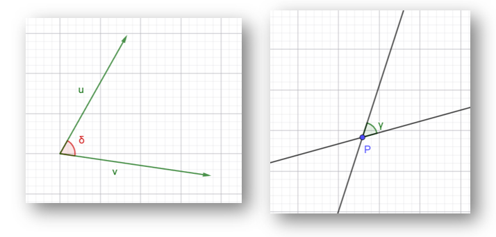

En esta sección calcularemos ángulos entre vectores y entre rectas.

Ángulo entre dos vectores
Considera dos vectores \(\vec{u}\) y \(\vec{v}\) con el mismo origen. El ángulo entre ellos depende de su dirección.
Arrastra los puntos A o B con el ratón y observa cómo cambia el ángulo entre los vectores \(\vec{u} = \overrightarrow{OA}\) y \(\vec{v} = \overrightarrow{OB}\).
Preguntas para reflexionar:
- ¿Cuándo es el ángulo agudo? ¿Y obtuso? ¿Qué signo tiene el producto escalar \(\vec{u} \cdot \vec{v}\) en cada caso?
- ¿Qué ocurre con el ángulo cuando los vectores son perpendiculares? ¿Cuánto vale \(\vec{u} \cdot \vec{v}\)?
- ¿En qué situación el ángulo es \(0^\circ\)? ¿Y \(180^\circ\)?
- ¿Qué relación observas entre el ángulo y el valor de \(\vec{u} \cdot \vec{v}\) cuando mueves los puntos?
Definición del producto escalar y ángulo
Dados dos vectores \(\vec{u} = (u_x, u_y)\) y \(\vec{v} = (v_x, v_y)\), el producto escalar se define como:
\[ \vec{u} \cdot \vec{v} = u_x v_x + u_y v_y \]El ángulo \( heta\) entre ellos viene dado por:
\[ \cos heta = \frac{\vec{u} \cdot \vec{v}}{\|\vec{u}\| \cdot \|\vec{v}\|} \]De donde se deduce:
- Si \(\vec{u} \cdot \vec{v} > 0\) → \( heta < 90^\circ\) (ángulo agudo).
- Si \(\vec{u} \cdot \vec{v} = 0\) → \( heta = 90^\circ\) (perpendiculares).
- Si \(\vec{u} \cdot \vec{v} < 0\) → \( heta > 90^\circ\) (ángulo obtuso).
2. Ejemplo práctico: calcular el ángulo entre dos vectores
Dados \(\vec{u} = (3, 4)\) y \(\vec{v} = (1, 2)\), se pide:
- Calcula el producto escalar \(\vec{u} \cdot \vec{v}\).
- Calcula el módulo de cada vector: \(\|\vec{u}\|\) y \(\|\vec{v}\|\).
- Determina el ángulo \( heta\) que forman (en grados).
- Clasifica el ángulo como agudo, recto u obtuso.
Apartado a: Producto escalar
Solución:
\[ \vec{u} \cdot \vec{v} = 3 \cdot 1 + 4 \cdot 2 = 3 + 8 = 11 \]Apartado b: Módulos
\[ \|\vec{u}\| = \sqrt{3^2 + 4^2} = \sqrt{9 + 16} = \sqrt{25} = 5 \] \[ \|\vec{v}\| = \sqrt{1^2 + 2^2} = \sqrt{1 + 4} = \sqrt{5} \approx 2.236 \]Apartado c: Ángulo
\[ \cos heta = \frac{\vec{u} \cdot \vec{v}}{\|\vec{u}\| \cdot \|\vec{v}\|} = \frac{11}{5 \cdot \sqrt{5}} = \frac{11}{5\sqrt{5}} \approx \frac{11}{11.18} \approx 0.984 \] \[ heta = \arccos(0.984) \approx 10.3^\circ \]Apartado d: Clasificación
Como \(10.3^\circ < 90^\circ\) y el producto escalar es positivo, el ángulo es agudo.
Comprobación con el ejemplo anterior
Para \(\vec{u} = (3, 4)\) y \(\vec{v} = (1, 2)\):
Numerador: \(3 \cdot 1 + 4 \cdot 2 = 11\)
Denominador: \(\sqrt{3^2 + 4^2} \cdot \sqrt{1^2 + 2^2} = 5 \cdot \sqrt{5} \approx 11.18\)
\[ \cos heta = \frac{11}{11.18} \approx 0.984 \quad \Rightarrow \quad heta \approx 10.3^\circ \]- Calculando el producto escalar \(\vec{u} \cdot \vec{v}\).
- Calculando el producto de los módulos \(\|\vec{u}\| \cdot \|\vec{v}\|\).
- Mediante el producto escalar \(cos heta = \left( \frac{\vec{u} \cdot \vec{v}}{\|\vec{u}\| \cdot \|\vec{v}\|} \right)\).
Ángulo entre dos rectas
Consideremos dos rectas \(r\) y \(s\). Observa la siguiente imagen interactiva. Manipula los puntos de las rectas y observa qué ocurre:
Preguntas para reflexionar:
- ¿Cómo es el ángulo entre los vectores directores de dos rectas comparado con el ángulo entre sus vectores normales?
- Mueve las rectas hasta que sean perpendiculares. ¿Qué ocurre con \(\vec{n}_r \cdot \vec{n}_s\)?
- Mueve las rectas hasta que sean paralelas. ¿Qué relación hay entre \(\vec{n}_r\) y \(\vec{n}_s\)?
- ¿El ángulo entre rectas depende de qué vector director tomemos (uno u otro sentido)?
Definición: ángulo entre dos rectas
Dadas dos rectas \(r\) y \(s\) con vectores directores \(\vec{v}_r\) y \(\vec{v}_s\), el ángulo \( heta\) entre ellas se define como el menor ángulo que forman sus direcciones:
\[ \cos heta = \frac{|\vec{v}_r \cdot \vec{v}_s|}{\|\vec{v}_r\| \cdot \|\vec{v}_s\|}, \quad 0^\circ \le heta \le 90^\circ \]Se toma el valor absoluto del producto escalar para obtener siempre el ángulo agudo (o recto).
Relación entre vectores directores y normales
Dada una recta \(r: Ax + By + C = 0\):
- Un vector director es \(\vec{v}_r = (-B, A)\) (paralelo a la recta).
- Un vector normal es \(\vec{n}_r = (A, B)\) (perpendicular a la recta).
Se cumple que \(\vec{v}_r \cdot \vec{n}_r = 0\), es decir, son perpendiculares.
Además, el ángulo entre dos rectas coincide con el ángulo entre sus vectores normales (o su suplementario, pero tomamos el agudo).
2. Rectas en forma paramétrica
Una recta en forma paramétrica se expresa como:
\[ r: \begin{cases} x = x_0 + \lambda v_x \\ y = y_0 + \lambda v_y \end{cases}, \quad \lambda \in \mathbb{R} \]
donde \((x_0, y_0)\) es un punto de la recta y \(\vec{v} = (v_x, v_y)\) es su vector director.
Ejemplo con paramétricas
Dadas las rectas:
\[ r: \begin{cases} x = 1 + 2\lambda \\ y = 3 + \lambda \end{cases}, \qquad s: \begin{cases} x = 2 - \mu \\ y = 5 + 3\mu \end{cases} \]Calcula el ángulo que forman.
Solución:
Vector director de \(r\): \(\vec{v}_r = (2, 1)\)
Vector director de \(s\): \(\vec{v}_s = (-1, 3)\)
\[ \vec{v}_r \cdot \vec{v}_s = 2 \cdot (-1) + 1 \cdot 3 = -2 + 3 = 1 \] \[ \|\vec{v}_r\| = \sqrt{2^2 + 1^2} = \sqrt{5}, \quad \|\vec{v}_s\| = \sqrt{(-1)^2 + 3^2} = \sqrt{10} \] \[ \cos heta = \frac{|1|}{\sqrt{5} \cdot \sqrt{10}} = \frac{1}{\sqrt{50}} = \frac{1}{5\sqrt{2}} \approx 0.1414 \] \[ heta = \arccos(0.1414) \approx 81.87^\circ \]3. Rectas en forma implícita
Una recta en forma implícita se expresa como:
\[ r: Ax + By + C = 0 \]
Su vector director es \(\vec{v} = (-B, A)\) o \(\vec{v} = (B, -A)\). Su vector normal es \(\vec{n} = (A, B)\).
Ejemplo con implícitas
Dadas las rectas:
\[ r: 2x + 3y - 6 = 0, \qquad s: 4x - 2y + 5 = 0 \]Calcula el ángulo que forman.
Solución:
Vector director de \(r\): \(\vec{v}_r = (-3, 2)\) (o \((3, -2)\))
Vector director de \(s\): \(\vec{v}_s = (2, 4)\) (o \((-2, -4)\))
\[ \vec{v}_r \cdot \vec{v}_s = (-3) \cdot 2 + 2 \cdot 4 = -6 + 8 = 2 \] \[ \|\vec{v}_r\| = \sqrt{(-3)^2 + 2^2} = \sqrt{13}, \quad \|\vec{v}_s\| = \sqrt{2^2 + 4^2} = \sqrt{20} = 2\sqrt{5} \] \[ \cos heta = \frac{|2|}{\sqrt{13} \cdot 2\sqrt{5}} = \frac{2}{2\sqrt{65}} = \frac{1}{\sqrt{65}} \approx 0.1240 \] \[ heta = \arccos(0.1240) \approx 82.87^\circ \]Dadas dos rectas con vectores directores \(\vec{v}_r\) y \(\vec{v}_s\): \[ \cos heta = \frac{|\vec{v}_r \cdot \vec{v}_s|}{\|\vec{v}_r\| \cdot \|\vec{v}_s\|}, \quad 0^\circ \le heta \le 90^\circ \]
- Si \(\vec{v}_r \cdot \vec{v}_s = 0\) → rectas perpendiculares.
- Si \(\vec{v}_r\) es proporcional a \(\vec{v}_s\) → rectas paralelas.
Relación con la forma implícita
Si las rectas están dadas en forma implícita:
\[ r: A_1 x + B_1 y + C_1 = 0, \qquad s: A_2 x + B_2 y + C_2 = 0 \]Entonces los vectores directores son \(\vec{v}_r = (-B_1, A_1)\) y \(\vec{v}_s = (-B_2, A_2)\), y la fórmula del ángulo queda:
\[ \cos heta = \frac{|A_1 A_2 + B_1 B_2|}{\sqrt{A_1^2 + B_1^2} \cdot \sqrt{A_2^2 + B_2^2}} \]- Obteniendo un vector director de cada recta (o un vector normal).
- Aplicando \( heta = \arccos\left( \frac{|\vec{v}_r \cdot \vec{v}_s|}{\|\vec{v}_r\| \cdot \|\vec{v}_s\|} \right)\).
Ángulo entre dos rectas a partir de sus pendientes
Supongamos que dos rectas tienen pendientes \(m_1\) y \(m_2\).
Cada recta forma un ángulo con el eje \(x\):
\[ m_1 = an( heta_1), \qquad m_2 = an( heta_2) \]El ángulo entre ambas rectas es la diferencia de esos ángulos:
\[ heta = heta_2 - heta_1 \]Aplicando la identidad trigonométrica de la tangente de una resta:
\[ an( heta_2 - heta_1) = \frac{ an heta_2 - an heta_1}{1 + an heta_1 an heta_2} \]Sustituyendo \(m_1\) y \(m_2\):
\[ an( heta) = \frac{m_2 - m_1}{1 + m_1 m_2} \]Para obtener el ángulo menor entre las rectas, se toma valor absoluto:
\[ an( heta) = \left| \frac{m_2 - m_1}{1 + m_1 m_2} \right| \]Interpretación:
- Si \(m_1 \approx m_2\), las rectas son casi paralelas → ángulo pequeño.
- Si \(m_1 m_2 = -1\), entonces \(1 + m_1 m_2 = 0\) → rectas perpendiculares (\( heta = 90^\circ\)).
- Cuanto mayor sea la diferencia entre pendientes, mayor será el ángulo.
Ejemplo
Consideremos las rectas:
\[ r: y = 2x - 1 \qquad (m_1 = 2) \] \[ s: y = -x + 3 \qquad (m_2 = -1) \]Aplicamos la fórmula:
\[ an( heta) = \left| \frac{m_2 - m_1}{1 + m_1 m_2} \right| = \left| \frac{-1 - 2}{1 + (2)(-1)} \right| = \left| \frac{-3}{-1} \right| = 3 \]Por tanto:
\[ heta = \arctan(3) \]Y el ángulo entre las rectas es aproximadamente:
\[ heta \approx 71.6^\circ \]Calculando la bisectriz de dos rectas
Enunciado:
Sean las rectas:
\[ r: 2x - y - 1 = 0 \]
\[ s: x + y - 3 = 0 \]
- Hallar las ecuaciones de las dos rectas bisectrices de los ángulos formados por \(r\) y \(s\).
- Determinar cuál de ellas es la bisectriz del ángulo agudo y cuál la del ángulo obtuso.
Método 1: Igualando distancias
Usamos la fórmula de distancia punto-recta:
\[ \frac{|2x - y - 1|}{\sqrt{2^2 + (-1)^2}} = \frac{|x + y - 3|}{\sqrt{1^2 + 1^2}} \]
\[ \frac{|2x - y - 1|}{\sqrt{5}} = \frac{|x + y - 3|}{\sqrt{2}} \]
Quitamos valores absolutos (dos casos):
\[ \frac{2x - y - 1}{\sqrt{5}} = \frac{x + y - 3}{\sqrt{2}} \quad ext{y} \quad \frac{2x - y - 1}{\sqrt{5}} = -\frac{x + y - 3}{\sqrt{2}} \]
Estas ecuaciones representan las dos bisectrices.
Método 2: Fórmula de la tangente
Calculamos pendientes:
\[ r: y = 2x - 1 \Rightarrow m_1 = 2 \]
\[ s: y = -x + 3 \Rightarrow m_2 = -1 \]
Ángulo entre rectas:
\[ an( heta) = \frac{m_2 - m_1}{1 + m_1 m_2} = \frac{-1 - 2}{1 + (2)(-1)} = \frac{-3}{-1} = 3 \]
Las bisectrices tienen pendientes intermedias entre \(m_1\) y \(m_2\), obtenidas a partir de:
\[ m = an\left(\frac{ heta_1 + heta_2}{2}\right) \]
Este método es más conceptual; en la práctica suele ser más directo usar el método 1 o 3.
Método 3: Diagonal de vectores directores
Vectores directores:
\[ \vec{v}_1 = (1, 2), \quad \vec{v}_2 = (1, -1) \]
Normalizamos:
\[ |\vec{v}_1| = \sqrt{5}, \quad |\vec{v}_2| = \sqrt{2} \]
\[ \vec{u}_1 = \left(\frac{1}{\sqrt{5}}, \frac{2}{\sqrt{5}}\right), \quad \vec{u}_2 = \left(\frac{1}{\sqrt{2}}, \frac{-1}{\sqrt{2}}\right) \]
Direcciones de bisectrices:
\[ \vec{u}_1 + \vec{u}_2 \quad ext{y} \quad \vec{u}_1 - \vec{u}_2 \]
Estas generan las dos bisectrices buscadas.
Identificación: la bisectriz del ángulo agudo corresponde a la suma de vectores (dirección más “intermedia”), mientras que la otra corresponde al ángulo obtuso.